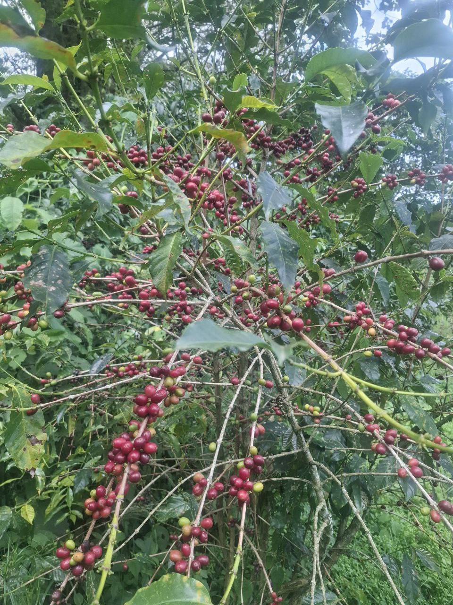
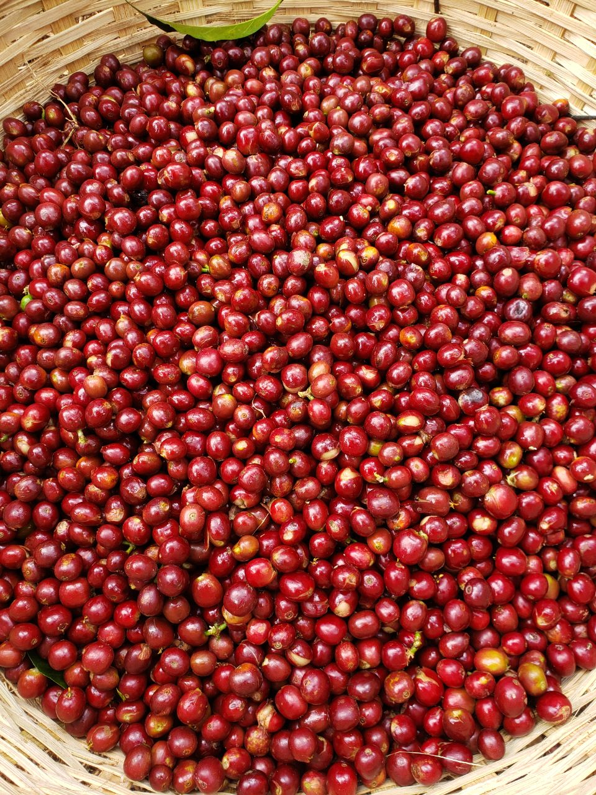
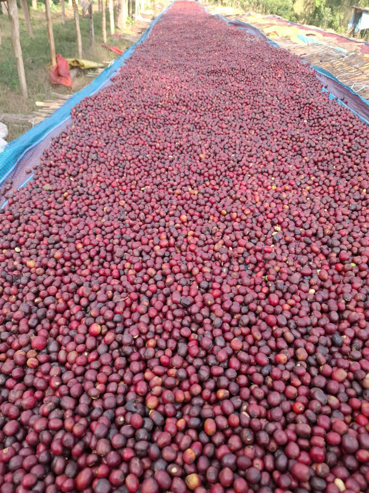
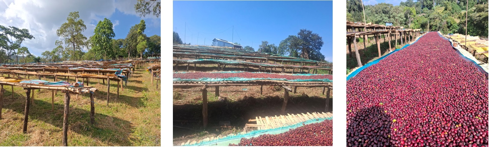

Fero General Trading PLC was founded in October 2026 by three dedicated Ethiopian coffee experts: Mr. Aklilu Woldesenbet, Mr. Sali Damise and Dr. Gizaw Ebissa. Each founder brings decades of combined experience in coffee farming, processing, cooperative management, environmental sustainability, and international certification. With deep roots in the Guji Zone -particularly Uraga District-the company is built on a legacy of quality, sustainability, and farmer empowerment.
Our founders are not just business leaders; they are active farmers, processors, and environmental and social auditors in coffee industry and beyond who understand every step of the coffee journey.



General Objective
To become a leading exporter of premium Ethiopian coffee by ensuring sustainable sourcing, transparent trade, and direct market linkages that benefit all parties engaged in the coffee business: farmers, Fero general Trading and international buyers.
Specific Objectives
Export target: Export 6 containers per year of high-quality Guji coffee sourced from Uraga District.
Direct sourcing: Source coffee directly from the founders’ own farms and local smallholder farmers.
Traceability & compliance: Maintain full traceability and compliance with international standards (Fairtrade, Organic, Rainforest Alliance, C.A.F.E. Practices).
Farmer empowerment: Empower local farmers through fair pricing, capacity building, and sustainable farming support.
Partnerships: Build long-term partnerships with international buyers who value quality and sustainability.
Who We Are
We are a team of passionate coffee professionals with expertise spanning:
Coffee Farming & Processing: Hands-on experience in cultivation, harvesting, and dry processing.
Cooperative Leadership & Management: Transforming local cooperatives into high-performing organizations.
Environmental Auditing & Certification: Expertise in Rainforest Alliance, C.A.F.E. Practices, UTZ, and Organic standards.
Research & Sustainability: PhD-level knowledge in environmental planning, agro-biodiversity, and sustainable agriculture.
Export & Market Development: Direct engagement in coffee trading and global market linkages.

What We Do
Sustainable Sourcing: We procure premium Arabica coffee directly from Guji Zone, Uraga District - known for its floral, citrus, and balanced cup profile.
Quality Processing: We operate our own dry processing facility to ensure consistency and quality control.
Certification Support: We guide farmers through certification processes to meet international market requirements.
Export Logistics: We manage end-to-end export operations, from milling and grading to shipping and documentation.
Farmer Empowerment: We provide training in sustainable farming, post-harvest handling, and financial literacy.
Why Choose Us
Direct from Farm: Our founders are farmers themselves - we control quality from seed to export.
Certification Expertise: Our team includes certified auditors for Rainforest Alliance, Starbucks C.A.F.E. Practices, and more.
Traceability: Every bag of coffee is fully traceable to the farm and its origin.
Sustainability Commitment: We integrate environmental and social responsibility into every business decision.
Local Knowledge, Global Reach: Deep roots in Ethiopia’s coffee sector combined with international market experience.
Our Duties and Responsibilities
Fair business: Ensure fair business in the coffee industry.
Quality standards: Maintain the highest standards of coffee quality and consistency.
Environmental & social safeguards: Uphold environmental and social safeguards in all operations.
Transparency: Provide transparent reporting to buyers on sourcing, pricing, and impact.
Partnerships: Foster long-term partnerships that support farmer livelihoods and buyer satisfaction.
Mission
To export exceptional Ethiopian coffee while fostering sustainable development, transparency, and equity across the coffee value chain - from Guji’s highlands to the global cup
Vision
To be the most trusted and impactful exporter of Ethiopian coffee, globally recognized for uncompromising quality, sustainable practices, and meaningful partnerships with every stakeholder.
Our Values
Integrity:Transparent and ethical in all dealings.
Sustainability:Environmentally responsible and socially inclusive.
Quality:Uncompromising standards from farm to export.